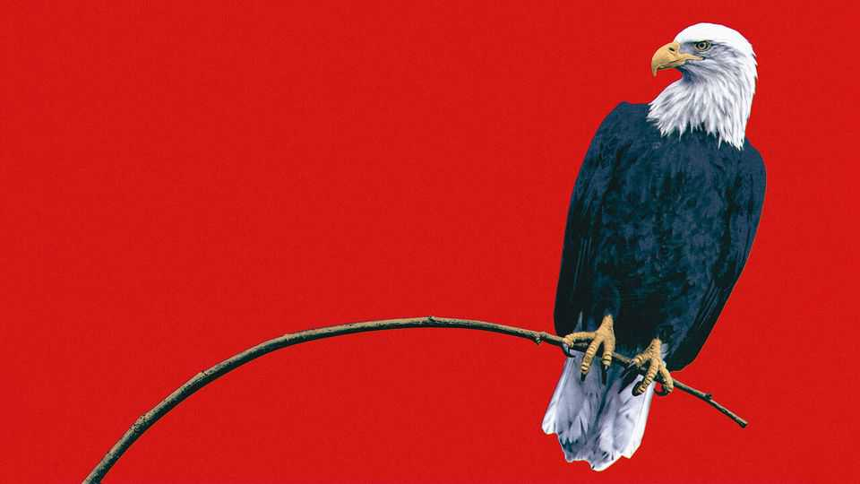
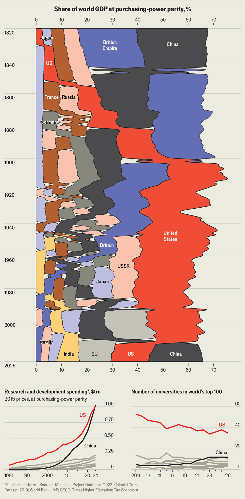

America is mighty—but becoming less dominant
Ahead of its 250th birthday, an empirical look shows the world’s leading country no longer stands so far apart
July 2nd 2026

Discussions of American power are prone to hyperbole. In his first inauguration speech, in 2017, Donald Trump lamented “American carnage”. In his second, in 2025, he declared that “America will reclaim its rightful place as the greatest, most powerful, most respected nation on earth.” Americans themselves are gloomier. Six in ten now think that by 2050 their country will be less important on the global stage. But has America’s power actually been in decline? And what is the nature of American strength? These are questions on which many politicians offer opinions, which in turn can help win elections, guide policy and reshape the world.
So, to mark America’s 250th anniversary, The Economist set out to move from the subjective to the quantifiable, with an empirical look at America’s global might. Economically, militarily and technologically, the country is richer, stronger and cleverer than ever. However, its relative position is not what it was. By the numbers, its dominance appears to be eroding—with decisions being made now that may bulk up some forms of power and starve others.
The nation’s rocketing trajectory can be tracked most easily through the rise of its economy. In 1820, the year in which comparable economic figures began, America was a small country of roughly 10m people, including European settlers, slaves and Native Americans. Its land area was less than half its current size; its economy about one-tenth that of the British Empire, itself overshadowed by Qing-dynasty China, which controlled roughly a quarter of the world’s economic output.
Fuelled by war, colonisation and the industrial revolution, the British Empire overtook China as the world’s largest economy around 1840, when the first opium war between the countries was under way. America was, however, catching up fast.
The invention of the cotton gin in 1793 and brutal deployment of slave labour meant that the country produced most of the world’s cotton by the 1850s. America expanded, often violently, westward, gaining natural resources that would be the envy of the world.
Sprawling forests supplied timber for rapid construction. Well-positioned ports and the sweeping Mississippi river provided routes for export. Coal mines in Pennsylvania, Appalachia and the Midwest powered railroads and factories; the Great Lakes’ rich deposits of iron ore fed steel mills. Civil war ravaged the country but did not destroy it, ending slavery in 1865.
Industrialising rapidly, America overtook Great Britain as a guzzler of energy in 1891. We calculate that in 1899—after the Spanish-American war and the Treaty of Paris, which gave it control of Puerto Rico, Guam and the Philippines—it controlled more fertile land than any country bar the Russian empire. A few years later, in 1903, America had the world’s largest economy.
America’s dominance grew as Europe was drained by war. In 1945, as much of the world lay in smouldering ruins, its economy peaked in relative terms. A country with 6% of the world’s population controlled roughly a third of its output.
America’s economy then took off, driven by industrial strength, ravenous consumer demand and state investment—in national laboratories, for instance, and highways. It helped that oil, discovered in Pennsylvania in the mid-19th century, began gushing from Texas wells in the 20th.

Add immigration, a reliable rule of law, ample capital and animal spirits, and America’s economy raced ahead, growing more in absolute terms between 1945 and 1999 than that of any other country. Its researchers developed the building blocks of modern life, including the transistor, the computer chip, the personal computer and the internet.
Today America’s economy is smaller than China’s, adjusted for local prices. But it is still by far the world’s largest at 2025 exchange rates, with a gross domestic product (GDP) of $32.4trn, 55% bigger than China’s, at number two. It is leading the development of generative artificial intelligence and has become the world’s biggest producer of oil and natural gas. Unlike many other countries—including China, Russia and much of Europe—it has a growing population. The dollar accounts for the highest share of global trade invoices and about half of international payments. Its entrepreneurs are the world’s most successful: eight of the world’s ten most valuable firms are American, and four of them were founded at least in part by immigrants in the past 40 years.
With the country at the centre of the world’s economy, America has used its might to elevate the world’s poor and punish its enemies. It has given some $2trn, in 2026 dollars, in official development assistance since 1960, according to tallies by the OECD, a club of mostly rich countries. The pervasive dollar lets America use economic sanctions to isolate individuals, companies and entire countries.
An examination of American military power produces a similar portrait of unmatched strength. America was at its mightiest, in relative terms, in 1945, not least because it was the only country with nuclear weapons. In the decades that followed, its role became more complex. America helped create the post-war order, then set about defending it—British and American troops sometimes met in doorways of remote outposts, as one left and the other moved in. By 1965 America had over 600,000 soldiers stationed abroad, spread across 108 countries.
In the years since, it has spent much more than other countries on its armed forces. The might and animosity of the Warsaw Pact nations, staring down America’s soldiers across the Fulda Gap during the cold war, provided one reason. America’s position within NATO supplied another. In grand alliances, game theory suggests the largest power will spend disproportionately more, as it has more to lose.
Even comparisons of military spending may understate America’s hard power. No country has more advanced military technology or, arguably, is more experienced deploying it at scale (in some areas, generals in Ukraine now have an edge, showing the expertise that springs from desperation). America’s outlay over the decades has yielded kit that lasts: an aircraft-carrier, of which it has 11, may remain operational for half a century. China has just three, none of which has seen combat.
Why, then, all the doomsaying on America’s vertiginous decline? There is a difference between strength and dominance—a relative term that happens to be one of Mr Trump’s favourites. America is stronger than ever, but on some economic measures it is less dominant. The dollar’s share of global foreign-exchange reserves has been on a decades-long decline, to 57% last year. Most important, an American-led world order has buoyed other countries. That is either a feature or a flaw, depending on your vantage point.
Since 1945 the world economy has grown by a factor of 19, and average incomes have risen roughly fivefold. China’s rise, particularly after joining the World Trade Organisation in 2001, has infuriated Mr Trump. It became the world’s largest economy at local prices about a decade ago. On two measures dear to Mr Trump—manufacturing output and the export of goods—America has lagged in relative terms. In 1945 America produced about half of the world’s manufactured goods; by 2024 it accounted for about 15%, with China’s share of manufacturing more than twice that. Never mind that America exports twice as many services.
There is also a perception, at least among some, that the post-war order has brought ordinary citizens a measly return on investment. It has become clear—in Iraq, Afghanistan and, more recently, Iran—that military capability alone does not guarantee military success. All those aircraft-carriers cannot prevent Iran from choking off the passage of oil through the Strait of Hormuz or stop China from limiting access to rare earths.
Nearly six in ten Americans surveyed in 2024 thought that America had lost more than it had gained from trade with other countries. “The wealth of our middle class”, Mr Trump declared in 2017, “has been ripped from their homes and then redistributed across the entire world.” The so-called “China shock” did have an impact, accounting for the loss of up to 2.4m jobs from 1999 to 2011, according to research from David Autor, David Dorn and Gordon Hanson. However painful for those individuals, that did not rattle America’s broader job market. At the end of 2011 America saw a regular churn of about 4m jobs each month.
The post-war order clearly promoted American prosperity. Since 1960 real incomes have increased more in America in absolute terms than in any other large country or region, rising more than five times as much as in India and twice as much as in China. Median family income has more than doubled in real terms since 1960. Inequality in America is real, and above the average in rich countries. That has much to do with rising returns to wealth and America’s tax structure.
Mr Trump and his acolytes are now keen to renew American strength, or at least to forge a new version of it. He has a distinctly 19th-century interest in new territory, and the resources that come with it. Last year military spending by America’s allies, when adjusted for local prices, exceeded America’s. But the White House has proposed a $1.5trn defence budget for the 2027 fiscal year, a 44% increase on 2026. After adjusting for factors such as higher wages for soldiers to make figures comparable across countries, America’s military spending would still be twice that of any other country. However, the president is explicit that American strength does not guarantee protection of allies. A NATO summit on July 7th and 8th will centre on Europe’s need to take more responsibility for defending itself. AI may become an important new tool of leverage.

Mr Trump seems happy to let America’s power atrophy in other areas where it was once strong. Last year USAID, the country’s main development agency, was fed “into the woodchipper”, in the words and at the direction of Elon Musk, now a trillionaire. Annual transfers were slashed to $29bn, about half their former level. America now gives about as much as Germany, which has an economy one-fifth its size.
Mr Trump is similarly sanguine about the risks to the country’s pre-eminence in research and innovation. America has more top universities than any other country—35 out of the top 100—but this number is dropping. China’s spending on research and development exceeded America’s in 2024. More than a third of top journal articles are now written by Chinese researchers, who last year published as many papers as their American, British, German and Japanese peers combined.
At the very pinnacle of science—Nobel prizes—America remains dominant. That is probably a lagging indicator. Over the past decade the median recipient has been 72 years old. Mr Trump is not working to reverse the trend. More than 7,800 research grants were frozen or terminated last year, estimates Nature, a scientific journal. The president is ceding innovation in green technologies to America’s rivals.
Most dramatic, and in contrast to much of the country’s 250-year history, is the view that this nation of immigrants is harmed by them. America may have near-zero net migration this year. Polling by Gallup suggests that America remains the top destination for migrants, but just 15% of adults who say they want to move permanently to another country name America as their top choice, down from 24% in 2007-09. In polling by Nira Data of people in 85 countries, respondents ranked America as the world’s fifth-most-disliked country, more abhorrent than Russia or China.
This swing in sentiment may be temporary, linked to an unpopular president. Among America’s greatest strengths is its dynamism, and its ability to change course. For now those outside America’s borders observe, with caution, a country that is still mighty—but in motion.■
Stay on top of American politics with The US in brief, our daily newsletter with fast analysis of the most important political news, and Checks and Balance, a weekly note that examines the state of American democracy and the issues that matter to voters.